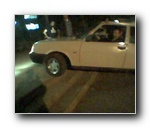
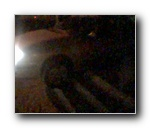
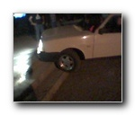
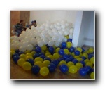
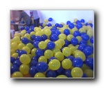
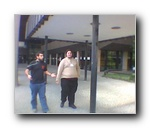

|  |  |  |  |
| araba-kurtarma-cg1 352 X 288 17 KB |
araba-kurtarma-cg2 352 X 288 18 KB |
araba-kurtarma-cg3 352 X 288 14 KB |
balon1 352 X 288 18 KB |
|  |  | ||
| balon2 352 X 288 23 KB |
Gorunt014 352 X 288 18 KB |
kaya 352 X 288 19 KB |
kaya2 352 X 288 16 KB |
| Penguenben 352 X 288 18 KB |
t-shirt 352 X 288 16 KB |
tux 352 X 288 19 KB |